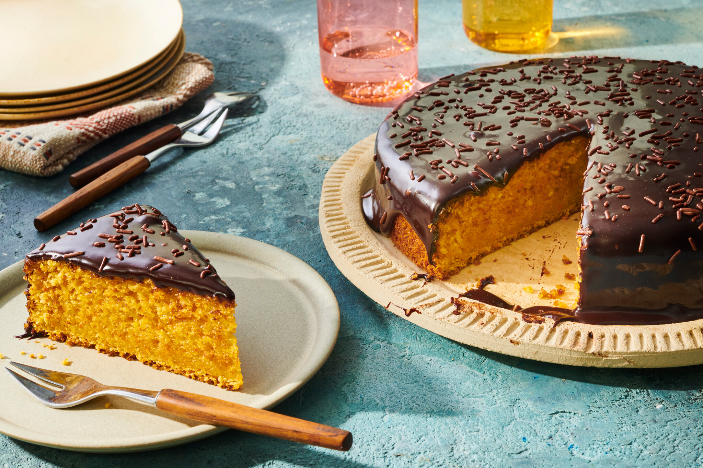

Carrot Cake With Chocolate Icing

Indulge in the delightful combination of flavors with this irresistible recipe for a Carrot Cake with Chocolate:
Ingredients for the cake:
- 2 cups all-purpose flour
- 2 teaspoons baking powder
- 1 teaspoon baking soda
- 1/2 teaspoon salt
- 1 teaspoon ground cinnamon
- 1/2 teaspoon ground nutmeg
- 1/2 cup vegetable oil
- 1/2 cup unsweetened applesauce
- 1 and 1/2 cups granulated sugar
- 3 large eggs
- 2 teaspoons vanilla extract
- 2 cups grated carrots
- 1 cup crushed pineapple, drained
- 1/2 cup chopped walnuts or pecans (optional)
Ingredients for the cake:
- 8 ounces cream cheese, softened
- 1/2 cup unsalted butter, softened
- 3 cups powdered sugar
- 1/4 cup unsweetened cocoa powder
- 1 teaspoon vanilla extract
Instructions:
- Preheat your oven to 350°F (175°C). Grease and flour a 9x13-inch baking pan or line it with parchment paper.
- In a large bowl, whisk together the flour, baking powder, baking soda, salt, cinnamon, and nutmeg. Set aside.
- In another bowl, combine the vegetable oil, applesauce, granulated sugar, eggs, and vanilla extract. Mix well until smooth.
- Gradually add the wet ingredients to the dry ingredients, mixing until just combined.
- Fold in the grated carrots, crushed pineapple, and chopped walnuts or pecans (if using).
- Pour the batter into the prepared baking pan and spread it evenly.
- Bake in the preheated oven for 30-35 minutes or until a toothpick inserted into the center comes out clean.
- Remove the cake from the oven and let it cool completely in the pan on a wire rack.
- While the cake is cooling, prepare the chocolate cream cheese frosting. In a mixing bowl, beat the softened cream cheese and butter until smooth and creamy.
- Gradually add the powdered sugar and cocoa powder, mixing until well combined.
- Stir in the vanilla extract until incorporated.
- Once the cake has cooled, spread the chocolate cream cheese frosting over the top of the cake.
- Optionally, decorate with additional grated carrots or chopped nuts.
- Slice and serve your delicious Carrot Cake with Chocolate.